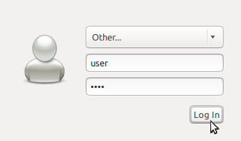

Nyelv vagy billentyűzet típus módosítása¶
Nyelv váltás¶
Sok elterjedt nyelv megtalálható az OSGeoLive-on. A nyelv váltáshoz:
Jelentkezzen ki
Jelentkezzen be user=”user”, password=”user”
Válasszon egy másik nyelvet a felső panel menüből
Nyomja meg a Log in gombot.
Ismételje meg az eljárást, ha szükséges vagy ha újra nyelvet akar váltani.


A rendszer menü és sok alkalmazás a választott nyelven jelenik meg most. Ha egy program továbbra is angolul jelenik meg, akkor a programhoz nincs fordítás - fontolja meg, hogy önkéntesként elkészítse a fordítást. További információkért forduljon közvetlenül a kiválasztott program közösségéhez.
További nyelvekhez lásd a főmenüből. (Internet kapcsolat szükséges)
Billentyűzet támogatás¶
A nemzetközi billentyűzet támogatást telepítette, de konfigurálni kell a rendszert az ön egyedi billentyűzetéhez. A beállítások módosításához nyissa meg a a főmenüből és kattintson az Input Method fülre. Majd kattintson a Customize active input methods és a Select an input method gombra. Most kattintson az Add gombra a jobb oldalon további billentyűzet kiosztás hozzáadásához, végül Close a preferenciák ablak bezárásához.
Most rákattinthat a billentyűzet ikonra az alsó menüsoron az aktív billentyűzet kiosztás kiválasztásához.